Life is Strange photo wall (Max Caulfield memorial wall)
One of the things that enchanted me in Life is Strange was Max Caulfield photo memorial wall at Blackwell Academy. It was one of those small details that made me fall in love with this game, contributing to its unique atmosphere. The Polaroid wall in Max’s dorm room allows player to not only appreciate her photography skills, but also learn more about her personality. In some way it also reflects Max’s decisions, especially the ones made at the beginning of the game.
Ever since my first playthrough of the game, I’ve been thinking about recreating Max’s photo wall at home. The opportunity for that appeared in August 2019, when I was doing a renovation of my home office. I decided to dedicate a whole wall to Life is Strange. I want to share the final result with you, along with a small DIY tutorial on how to make Max photo wall that will look as similar to the in-game version as possible.
 The recreation of Max Caulfield photo memorial wall in my home office at night…
The recreation of Max Caulfield photo memorial wall in my home office at night…
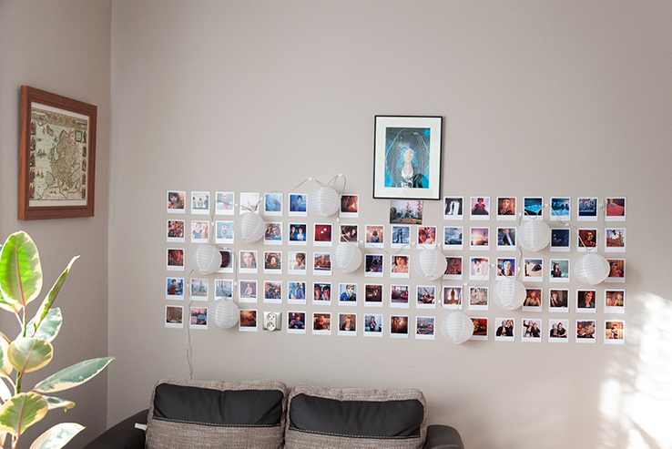 … and during the day.
{kind=link}
There are many variants of Life is Strange Polaroid wall that one can recreate at home, depending on available space, materials, desired aesthetics, budget, etc. Please keep in mind that below you’ll find only one of many possibilities. I encourage you to be creative and simply have fun with it – there is no bad way of making a photo wall and perhaps you’ll come up with your own ideas on how to make something work in a better way than described below. If you have any questions, do not hesitate to contact me.
My photo wall inspired by Life is Strange
My Max Caulfield photo wall consists of 76 prints of various moments from both Life is Strange and Before the Storm. Some of them are the exact optional photographs that Max can take in the game, while others are cropped from screen shots or cut scenes. All pictures match the size of a classic Polaroid film Max has been using throughout the game and are printed on a thick, high quality paper. While Max’s Polaroid wall at Blackwell is organic in its nature (i.e. photographs are not perfectly aligned with each other, nor are they group thematically), I aimed for a more organised look that would be pleasant even for a person not familiar with the original composition. That’s why I decided to make a few “thematic zones” referring to different characters, locations or events.
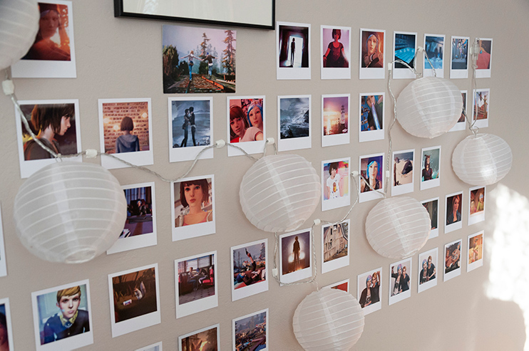
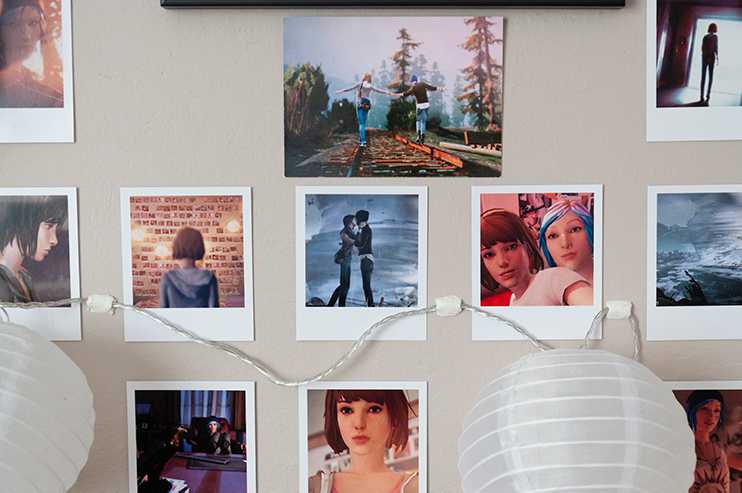 My Life is Strange photo wall is loosely divided into several thematic zones. Here you can see the central part of the composition, devoted to Max and Chloe
The most difficult thing was, by far, to obtain proper lights for the photo wall. Recreating the exact composition of Polaroids from the game was not a priority for me, but I wanted to have lighting matching the original one as close as possible. The vast majority of lanterns available online is way too small in diameter (and there are not that many types resembling Max’s lights to begin with). It took me a few hours of googling, plus help of my friends from Twitter, to find a single model of lights similar to the ones that Max used at Blackwell. Still, they are not an exact match (they are made from polyester, not paper like the ones in the game). But on the other hand they use warm LED lights, so they have low energy consumption and don’t warm up too much.
You can see that my Life is Strange photo wall has two additions. The first one is a fine art print of Chloe and the mysterious raven from Before the Storm. It was one of the first artworks I bought after playing Life is Strange for the first time. In fact, I ordered it even before I finished Before the Storm, so at that moment I wasn’t quite sure about the role that raven was supposed to play in the events of the game. The second one, presenting one of my favourite scenes from the original game, is in fact a postcard. I decided to add it to the wall not only for the graphic on the front, but, most importantly, because of the message at the back from my dear friend (who is also a fan of Life is Strange).
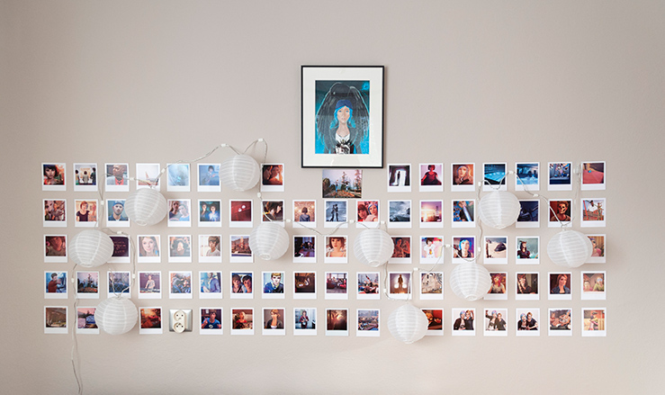 I decided to add some extra things to my Life is Strange photo wall: a fine art print of Chloe and the raven and a postcard depicting one of my favourite moments from the original game. Together they create a centrepiece that viewer’s eyes naturally gravitate to.
The whole Max Caulfield photo memorial wall is situated at the wall opposite to my desk, so all I have to do when I’m working is to lean to the side a bit, to see it behind my computer screen, at the far end of the room. During the daytime the lights are unplugged, but in the evening they turn my home office into a location taken out from Arcadia Bay. They also work perfectly as a mean to reduce contrast between bright computer screen and the background, when the ceiling lights are turned off.
How to make your own Life is Strange photo wall
If you want to create your own Polaroid wall, I have some good news for you: the whole process is actually much simpler than one could think and doesn’t require any tools, although spirit level is recommended for the best effect. If you have all materials at hand and have already planned the layout, you can make your own photo memorial wall in one afternoon (of course, depending on the size of the wall and complexity of your project).
Shopping list – what you are going to need:
- Polaroids or print-outs made on a thick, stiff paper
- chain of paper lanterns or other similar lights
- adhesive putty (recommended) or double-sided adhesive tape (not recommended)
- spirit level
- long ruler (optional)
Now, let’s talk about each of these items.
Life is Strange Polaroids or prints
They will be the core element of your decoration, so you have to make sure they are of a good quality and all have correct size (any variations in terms of height or width will result in misalignment of neighbouring pictures). The thicker, sturdier the paper they have been printed on, the better, because it is less likely to get bent or damaged when placing the decoration, rearranging pictures or taking them down. You can either print them yourself (naturally, you need to prepare all graphics first) or purchase them online. I bought all my Life is Strange Polaroids from The Rewind Club on Etsy and I wholeheartedly recommend you that store. They have a wide selection of Polaroids and other merchandise from Life is Strange, Before The Storm and Life is Strange 2.
Lights
This is the most difficult item to get right. On the contrary to what one could think, it is very hard to find the exact chain of paper lanterns that Max had in her room at Blackwell, both in terms of size and appearance1. Most of the lanterns I checked were either too small or didn’t have paper covers. I really wanted to have lighting as close to the original as possible, and in the end I was ready to assemble them myself, buying empty paper lanterns and generic lights separately. Luckily, my friends recommended me an excellent set that looks almost identical to lights used for Max’s photo wall. I’m talking about Lunar Lantern Lights produced by Lights4fun. These are LED lights certified for both indoor and outdoor use. They come in warm white flavour, which is perfect for my purposes and are easy to set up. There are ten lanterns in one set, but you can connect multiple sets together, creating longer chains. The main difference between these and Max’s lanterns is, their covers are made of polyester, not paper. It makes them refract light in a slightly different way (the glow coming from Lunar Lantern Lights is more pearly, while the one from normal paper lanterns is rather matt). For me, personally, it does not matter in the slightest. Additionally, polyester covers are far more durable and they don’t get dirty easily. The whole set is waterproof, so you can even clean it with water or wet cloth if needed, just remember to keep the plug dry. I found these lamps on Amazon, however you might be able to get these (or something similar) at your local store.
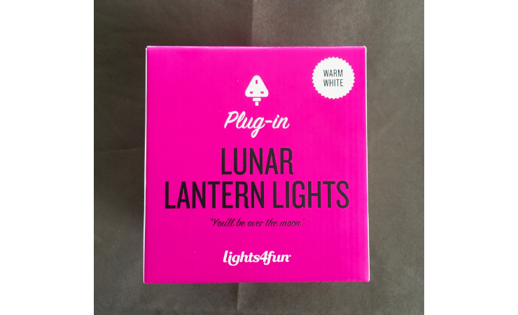
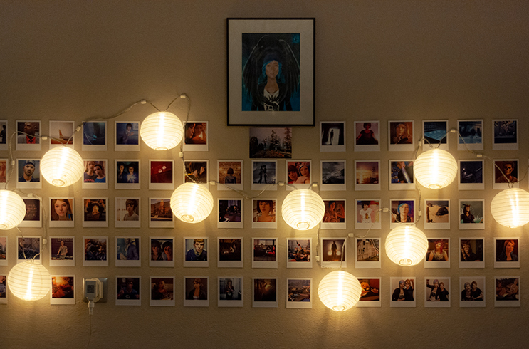
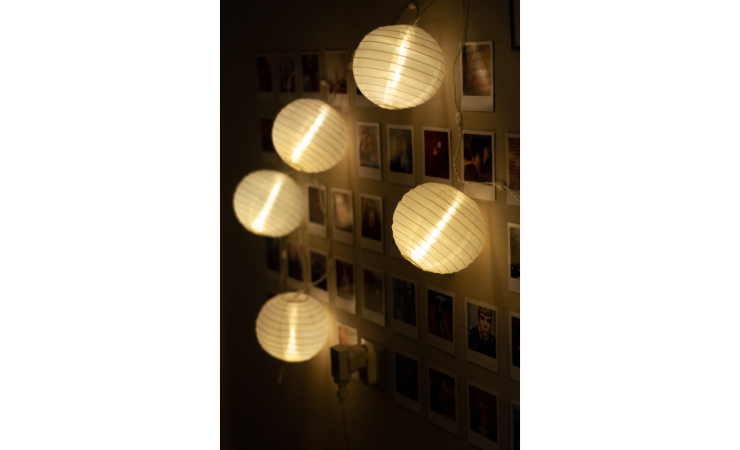 Lunar Lantern Lights used in my installation have polyester covers instead of paper ones, which results in a more pearly, satin glow.
Adhesive material
Depending on the way you’ll want to mount your Polaroids, you are going to need some sort of adhesive to stick them to the wall. I strongly recommend using adhesive putty for the best effect, since it will not damage the paint on the wall or the prints themselves when taking the decoration down. You can shape it into any way you want, it is perfect for holding such light objects like prints or Polaroids against a wall. It also allows for corrections after placing the picture, either by moving it slightly when adhered to the wall, or replacing it entirely in new location. For my Life is Strange photo wall I used Faber-Castell Tack-It adhesive putty bought on Amazon, but you can pick whatever brand you want, since they all have virtually the same properties and usability.
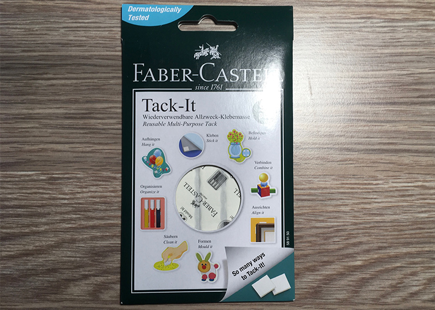 I used Faber-Castell Tack-It adhesive putty to mount Polaroids on the wall, although you can choose from a multitude of other options.
Another option is a double-sided adhesive tape. It is cheaper and easier to find in stores, and it offers much stronger connection between the Polaroid and the wall. The problem is, double-sided tape is so strong, it will almost certainly peel off some wall paint when you will try to take the decoration down eventually, not to mention ruining the prints as well (i.e. tearing or delaminating their backs). It also glues both surfaces instantly, so you have only one try to align each print in the correct way.
Alternatively, you can mount a set of cords stretching from wall to wall and attach prints to these cords using clothes pegs. In that way the wall behind will remain intact, but on the other hand you’ll have to find a way of hooking the cords to opposite walls, which might require some drilling.
Spirit level
I believe this part is self-explanatory. The use of a spirit level will depend on the aesthetics you aim for when creating your own Polaroid wall. If you are a fan of neat, organised compositions, spirit level will make it much, much easier to create a levelled, straight layout, with equal intervals between prints. Generally speaking, the longer the spirit level, the better, because you can control your level for more than a single Polaroid at the time (you can also mark vertical and horizontal intervals directly on your level with a pencil). I’ve been using a regular, 50-centimetre long spirit level I bought years ago, but you can also use a laser line level (although it will not be as comfortable to use in this particular case as an old school spirit level). Of course if you desire to get a more organic appearance of your photo wall and you don’t want (or need) to keep all photographs perfectly aligned, you can just eyeball the level of each row of prints. That, while not neat and perfect, would create a look more resembling the original Polaroid wall seen in Life is Strange.
Long ruler
If you decide not to use a spirit level (or you are using a laser line level instead) but still want to keep equal spacing between Polaroids, you are going to need something to mark the correct interval, both horizontally and vertically. For that you can use a plain ruler (again, the longer ones would be more convenient), or a long strip of a cardboard, etc. Basically anything that would allow you to measure and mark a distance and that could be placed conveniently at the wall.
Making Life is Strange Polaroid wall step by step
1. Plan your photo wall
Before you grab your tools and start putting Polaroids on the wall, you should plan the whole thing and visualise your desired composition. First of all, you need to know how much space do you have available for the decorations and how many photos you want to fit on that space. If you want to incorporate other elements (like the fine art print or the postcard in my case) you need to include them in your plan as well. You can either draw the whole thing or take a picture of a wall and annotate it digitally (see my example below).
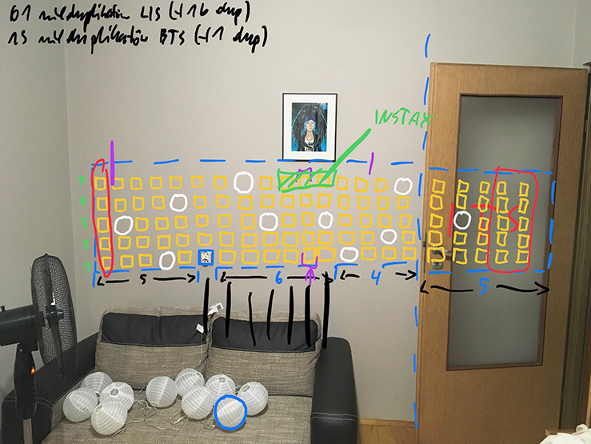 You should plan the entire layout of your photo wall beforehand. The main limiting factor for positioning the lanterns may be the length of the cable available.
I recommend you start outlining your composition with placement of the lights. Please keep in mind that one of the factors limiting your layout might be the length of a cable connecting neighbouring lanterns. You need to plan where to place each lantern in a sequence as not to exceed the cable length available to you. Of course the type of lighting will also determine your composition. For example, you might opt for a bare lightbulbs instead of LED lights in paper lanterns. In that case your lights would have a different diameter, which would have to be accounted for in the planning stage.
A tip: you can achieve best results in terms of aesthetics when designing an asymmetrical lighting layout. Try to avoid placing lanterns in a predictable way, at regular intervals, etc. If you are still unsure about it, remember that Max Caulfield photo memorial wall was not symmetrical either.
When planning the layout of your photo wall you have many various options, depending on your personal preferences. You can sort or group them in rows or columns thematically by characters, location, the game they are from, etc. You can also arrange them in zones (i.e. group together Blackwell students, adult characters) or place them chronologically, to reflect the progress of the story. A good idea is to group Polaroids with the same/similar dominating colours, so they can create a mosaic of some sort on your wall. You can also embrace the chaos and place them randomly or semi-randomly. Whatever works for you best.
One more thing: when planning your photo wall you should know whether it will be a finished composition or you are going to add some elements later. This will dictate how you are going to place lanterns and other elements (i.e. it may be necessary to put a lantern outside of your current composition, so it would provide enough light to the extension in the future). Always plan for the final version, even if it means that for the time being a part of your Polaroid wall might look unfinished. It will save you much time in the future, keeping you from rearranging the entire thing from scratch.
2. Choose and collect all required elements and tools
Having the whole thing outlined, you can start gathering all the decorations, lighting and other items necessary to finish the composition. If buying Polaroids online make sure that they are of a correct size and printed on a good-enough paper. Check the technical requirements for the lights (my lanterns were only available with a UK plug, so I had to buy an adequate adapter for EU sockets beforehand). Get an adhesive putty and try it out at some hidden part of your wall to make sure it does not damage it and can be easily removed. Collect your tools, if you need any. Check the batteries in a laser line level, if you use one.
3. Prepare your working place
Get yourself some flat surface (a desk, coffee table, couch, etc.) that is big enough to lay out all the Polaroids that will be placed on your wall. Then, using your notes and plan from the first step, recreate the entire composition. Don’t worry about spacing, photos can overlay each other. You only have to make sure that they are sorted correctly (i.e. which photos will be put next to which ones in neighbouring rows/columns). Double check everything. It’s easier to make some corrections now rather than to rearrange Polaroids when they are already on the wall. At this stage you may also see that some photos do not work well next to each other, so it is a good moment to make some final rearrangements.
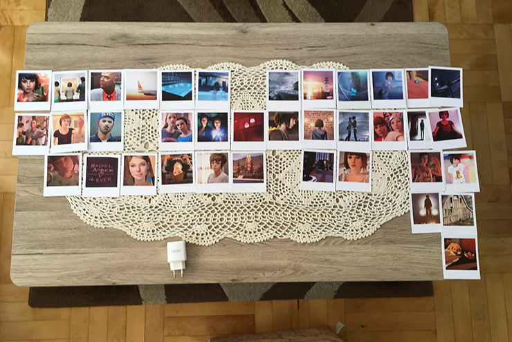 To make everything go smoothly recreate your desired composition on a flat surface, like a desk or coffee table, remembering to leave empty space for lanterns or other objects. It will give you an easy reference when transferring your idea onto a wall.
4. Start placing your first row of photos at the wall
Although you can place Polaroids either by rows or by columns, I strongly recommend the former, because it is much easier to check if everything is levelled and spaced correctly. The first row of pictures is the most important one and it has to be placed precisely, because you are going to use it as a reference for the next ones. In order to minimise errors and inaccuracies, it is best to start with a middle row of a composition rather than the top or bottom one. You can use a spirit level or a ruler to mark the exact interval required in your composition, therefore placing next Polaroids will be easier. Always believe what the spirit level shows you, not your own eyes. I cannot stress that enough. If you are 100% sure that the Polaroid is not placed straight, but the spirit level shows you that it is, it is in fact straight. If you are working on a big repetitive pattern (like a grid of Polaroids on a wall) it is ridiculously easy to lost a sense of true level, because our brain will naturally switch to using existing Polaroids placed in a row as a reference for the true level. I was using a spirit level and still, I skew the right third of the layout upward, because I listened to the sense of level perceived with my eyes and not to what the spirit level showed me.
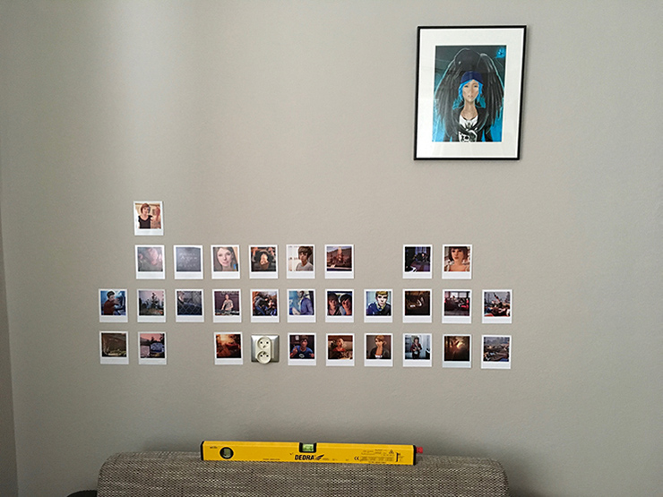 You should do your best to place the first row as precisely as possible (you can use a spirit level to check of the Polaroids are straight). It will allow you to work quicker when expanding your composition to the next rows.
Remember to leave empty space where you want to place your lights!2
If you are using an adhesive putty, you can place two small pieces of it about 1 centimetre (half of an inch) from the top and bottom edges of the picture, along its centreline. They shouldn’t be too thin, otherwise it would be difficult to scrap them from the wall if they stick. They do, however, need to be relatively flat, as not to cause visible bulge in the print when you press it against the wall.
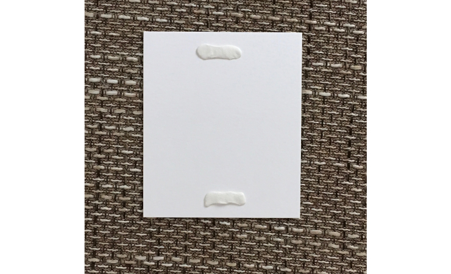 One piece of adhesive putty is enough to mount a single print on the wall. Just tear it in half and place both pieces near the top and the bottom of a Polaroid, along the centreline. Make sure to flatten the adhesive putty a bit, although don’t make it too thin.
5. Extend your Polaroid wall from the first row upwards and downwards
After successfully placing the first row (and checking several times that it is, in fact, level) you can start expanding your Polaroid wall by adding next rows, starting right above and below the first one and then proceeding outwards. At this stage, if you were precise with the first row, you don’t need to keep the spacing between Polaroids (you can follow the spacing of the original row using a level or a ruler), but you need to carefully check if every new Polaroid is straight. A good idea is to, every couple of Polaroids placed, take a few steps back and look at the wall as a whole from the distance. It will help you to detect potential problems, like some photos being rotated, rows (or parts of them) being skewed, or some photos not mixing very well aesthetically. Don’t be afraid to make necessary adjustments, but also remember that you still have your original layout you are trying to recreate, so you need to be aware of all the deviations you’ve made since the beginning of the work. When you are done check all Polaroids to make sure they are attached securely to the wall.
6. Prepare the lighting
Assemble the lanterns according to the user’s manual provided with the product. Plug them in to check if they work correctly and there are no dangerous anomalies (smoke, overheating, etc.). If everything is fine, unplug them and start placing lanterns at the reserved spots on the wall. Lunar Lantern Lights are very light, so I had no problem mounting them with the same adhesive putty I used for the Polaroids. You just need to remember to place adhesive on cables above the lanterns themselves, in a way that would allow them to hang in the correct position. You may need to use two of three pieces of adhesive for every mounting point to achieve best results.
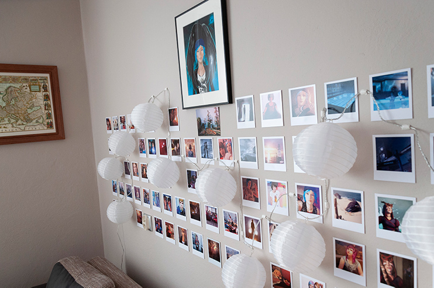 When mounting the lights, remember to place adhesive putty on the cables above the lanterns, so the lanterns hang in the correct position on the wall. You may want to combine two or three pieces of adhesive putty to ensure the mounting is stable.
7. Enjoy your own Max Caulfield photo memorial wall!
Well done! You did a great job and now you can enjoy your own piece of Arcadia Bay at home 🦋 If you found this tutorial useful, please don’t forget to reach out to me on Twitter, I would love to see a picture of your creation!
Have fun!